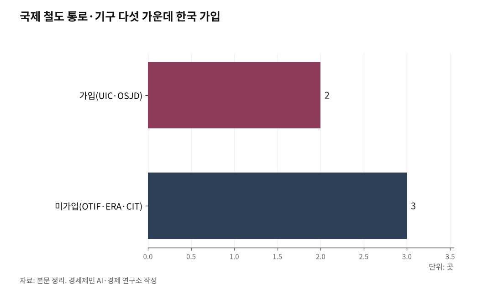

[중국철도⑥] 한국이 들어선 국제 철도 통로는 다섯 가운데 둘
UIC·OSJD 두 기구엔 가입, OTIF·ERA·CIT 세 기구는 비회원이다
대륙 철도 연결에 궤도·신호·전기·통신 네 가지 호환이 필요하다
한국 KTCS-3 성능검증 완료, LTE-R 세계 최초 상용 운영
한반도종단철도(TKR, Trans-Korean Railway)가 시베리아횡단철도(TSR)와 중국횡단철도(TCR)로 이어지면 한국 화물은 부산에서 유럽까지 철도로 닿는다.

그러나 분단으로 한반도종단철도는 아직 멈춰 있다. 대륙 철도로 나가려면 제도와 기술 두 문턱을 넘어야 한다.
다섯 국제 철도 기구, 한국은 둘에 가입
국제 철도 기구는 다섯이다. 100여 년에 걸쳐 안전과 표준, 법률, 운송 규범을 다듬었다.
한국은 국제철도연맹(UIC)과 철도협력기구(OSJD) 두 기구의 회원이다. UIC는 1922년 파리에서 발족해 2025년 9월 기준 223개사가 가입한 표준 기구로, 한국철도공사(코레일)가 회원이다.
UIC는 UIC 코드와 국제철도표준(IRS)으로 설계·건설·운영의 공통 규칙을 만든다. 이 표준은 법적 구속력은 없지만 철도 부문에서 기술적 정당성을 갖는다. 코레일은 2025년 5월 인도 뉴델리에서 UIC 아·태 지역 총회를 주재했다.
OSJD는 1956년 설립한 유라시아 화물·여객 운송 협약 기구다. 한국은 2018년 29번째 정회원이 됐고, 2023년 부산에서 제50차 장관회의를 처음 주최했다.
OSJD의 두 협약 SMGS(화물)와 SMPS(여객)가 회원국 철도 운송의 기본 법률이다. 시베리아횡단철도와 중국횡단철도 같은 유라시아 회랑이 이 체계에서 굴러간다.
OTIF·ERA·CIT 세 통로는 비회원
나머지 셋은 유럽 축이다. 한국은 비회원이다.
국제철도수송정부간기구(OTIF)는 국제철도수송협약(COTIF)을 근거로 1985년 출범했고 2011년 유럽연합도 가입했다. 한국 화물이 유럽 OTIF 회원국을 지나려면 한국이 이 협약에 가입해야 한다.
유럽연합철도청(ERA)은 기술 상호운용성 표준(TSI)을 만든다. 한국 KTX 기술이 유럽에 진출하려면 이 TSI를 충족해야 한다. 국제철도수송위원회(CIT)는 운영사 간 운송 계약과 서류를 통일하는 OTIF 실무 기구다.
궤도와 신호, 표준궤·광궤와 KTCS
제도 다음은 물리적 호환이다. 첫째는 궤도, 둘째는 신호다.
한국과 중국, 서유럽은 표준궤 1435㎜, 러시아와 동유럽은 광궤 1520㎜를 쓴다. 시베리아횡단철도는 모스크바에서 블라디보스토크까지 9288㎞를 광궤로 잇는다. 두 궤간이 만나는 국경에서 대차 교환이나 환적을 한다.
레일 단면은 UIC 60이 고속선과 중하중 화물선의 국제 표준이다. 궤간과 레일이 맞아야 대륙 철도가 한 몸으로 굴러간다.
신호는 유럽 ETCS, 한국 KTCS, 중국 CTCS로 갈린다. 한국형 KTCS-3는 국가철도공단이 2025년 3월 성능검증을 마쳤다.
KTCS-3는 궤도회로 없이 이동폐색과 열차자동운전(ATO)을 구현한다. 한국형 통합 무선망 LTE-R을 기반으로 열차 위치를 검지해 선행 열차 뒤까지 안전하게 제어한다.
전기와 통신, AC 25kV와 LTE-R
셋째는 전기, 넷째는 통신이다. 한국 간선은 교류 2만5000V를 쓴다. 국제 표준(IEC 60850)과 같은 전압이지만 주파수가 갈린다.
한국은 60Hz, 중국과 유럽은 50Hz를 쓴다. 대륙으로 나가려면 주파수 변환 설비를 두거나 다중 전압 대응 차량을 운용해야 한다.
통신에서는 한국이 앞선다. 2017년 세계 최초로 LTE 기반 철도 통합 무선망(LTE-R)을 강릉선에 깔아 상용 운영 중이다. 한국 LTE-R은 700㎒ 통합 공공망 대역을 쓴다.
국토교통부는 2012년부터 이 통합 무선망을 주요 정책으로 밀었고, 2027년까지 1조1000억원을 들여 전 노선에 확대한다.
유럽은 5G로 갈아탄다, 표준 정합의 숙제
유럽 통신 표준도 세대를 바꾼다. UIC는 2G 기반 GSM-R의 수명이 2035년 무렵 끝난다고 본다. 후속은 5G 기반 FRMCS다.
한국 LTE-R은 4G 세대다. UIC의 차세대 FRMCS는 5G를 채택해 LTE 세대를 건너뛴다. 여기서 표준 정합이라는 숙제가 남는다.
제도로는 다섯 통로, 물리로는 네 호환이다. 한국이 대륙 철도로 나가는 길은 이 문턱들을 하나씩 넘는 데 있다.
※ 이 기사는 AI 프로그램 클로드를 활용해 작성했습니다.

참고문헌
· "About UIC(국제철도연맹 소개)", 국제철도연맹(UIC), 2024.10.9., https://uic.org/about/about-uic/
· "About OSJD·History of OSJD", 철도협력기구(OSJD), https://en.osjd.org/en/9176
· "[설명] 대한민국, 2021년 국제철도협력기구 장관회의 유치", 국토교통부, 대한민국 정책브리핑, 2020.12.4., https://www.korea.kr/news/pressReleaseView.do?newsId=156425188
· "OTIF 공식 사이트", 국제철도수송정부간기구(OTIF), https://otif.org/en/
· "Vision, Mission, Values & Tasks", 유럽연합철도청(ERA), https://www.era.europa.eu/agency-you/agency/vision-mission-values-tasks
· "CIT History", 국제철도수송위원회(CIT), https://cit-rail.org/en/history/
· "차세대 열차제어시스템(KTCS-3) 성능검증 완료", 국가철도공단, 2025.4.30., https://www.kr.or.kr
· "철도통합무선망(LTE-R) 시스템의 기술 동향과 발전 방향", 한국과학기술정보연구원 KoreaScience, https://koreascience.kr/article/JAKO202028959353752.pub?lang=ko
· "2027년까지 LTE급 철도통신시스템 전 노선 구축", 국토교통부, 대한민국 정책브리핑, https://www.korea.kr/briefing/policyBriefingView.do?newsId=148846783
· "FRMCS(Future Railway Mobile Communication System)", 국제철도연맹(UIC), 2025.9.1., https://uic.org/rail-system/telecoms-signalling/frmcs
#한반도종단철도 #TKR #국제철도연맹 #UIC #철도협력기구 #OSJD #OTIF #ERA #CIT #표준궤 #광궤 #KTCS #LTER #FRMCS #대륙철도